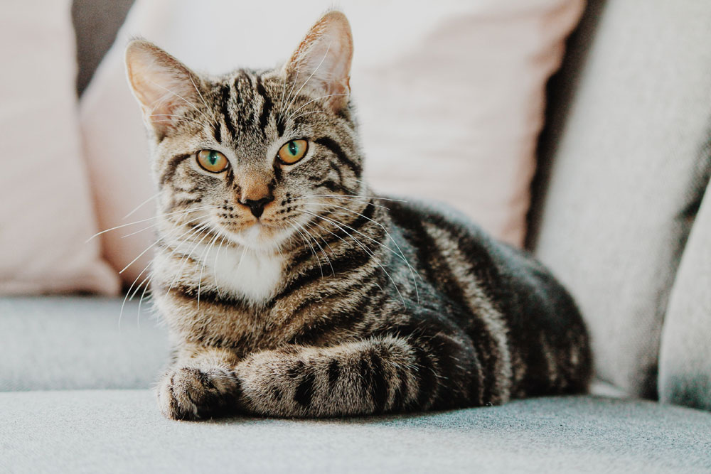

Շների հետ մեքենայով ուղևորությունը հաճախ կարող է սթրեսային լինել ինչպես տիրոջ, այնպես էլ կենդանու համար։ Որոշ շներ կարող են ճանապարհը բավական հանգիստ տանել, մինչդեռ մյուսները վախենում են, ունենում են սրտխառնոց կամ գերլարված են դառնում նույնիսկ կարճ ուղևորությունների ժամանակ։
Եթե դուք հաճախ եք տեղափոխում ձեր շանը, ապա կարևոր է ապահովել նրա հարմարավետությունն ու անվտանգությունը։
Ստորև ներկայացնում ենք հինգ գործնական խորհուրդ, որոնք կօգնեն կազմակերպել մեքենայով շան ճիշտ, անվտանգ և սթրեսից զերծ փոխադրումը։
Շատ շներ սթրես են ապրում ոչ թե հենց մեքենայով ճանապարհորդելուց, այլ հատկապես շարժիչի կամ մեքենայի դռների փակվելու ձայնից կամ շարժման ժամանակ առաջացող վիբրացիոն աղմուկից։ Այս ձայները, որոնք մեզ համար սովորական են թվում, կարող են շան համար տագնապ առաջացնող ազդակներ լինել։ Հատկապես այն շների դեպքում, ովքեր դեռ մեքենայով չեն տեղափոխվել կամ նախկինում բացասական փորձ են ունեցել, խորհուրդ է տրվում դեռ տանը վարժեցնել նրանց այդ ձայներին։ Կարելի է միացնել մեքենայի ձայնը՝ շանը ծանոթ միջավայրում։ Սա կօգնի աստիճանաբար նվազեցնել ձայնային զգայունությունը և վերածել մեքենայի ձայնը սովորական, վտանգ չներկայացնող ֆոնի։
Եթե շանը մեքենայով տեղափոխում եք միայն անասնաբույժի մոտ, նա կարող է սկսել վախենալ հենց մեքենայի տեսքից կամ ձայնից։ Որպեսզի այդ վախը չառաջանա, ժամանակ առ ժամանակ նրան մեքենայով տարեք զբոսանքի կամ այգի՝ պարզապես հաճելի տեղ։ Այդ ընթացքում կարող եք նրան տալ իր սիրելի համովիկը կամ խաղալիքը, որպեսզի հիշի՝ մեքենայով գնալը ոչ թե վախենալու, այլ հաճելի է։ Եթե շունը սովորի, որ մեքենան նշանակում է զբոսանք կամ խաղ, նա ավելի հանգիստ ու վստահ կզգա իրեն ճանապարհին։
Շների համար հոտերը շատ կարևոր են։ Նրանք ծանոթ հոտերով հասկանում են՝ ուր են, ում հետ են և արդյոք ամեն ինչ կարգին է։ Եթե մեքենայով երկար ճանապարհ եք գնում, արժե ձեզ հետ վերցնել շան ծանոթ իրերից որևէ մեկը՝ օրինակ՝ այն ծածկոցը, որի վրա նա սովոր է քնել, կամ սիրելի խաղալիքը։ Այդ իրերի հոտերը նրան կհիշեցնեն տունը և կօգնեն զգալ ավելի հանգիստ ու ապահով՝ նույնիսկ նոր միջավայրում։
Երկար ճանապարհորդությունների ընթացքում կարևոր է յուրաքանչյուր 2-3 ժամը մեկ կանգ առնել, որպեսզի շունը կարողանա դուրս գալ մեքենայից, մի փոքր քայլել, ձգվել և թոթափել կուտակված լարվածությունը։ Այս կարճ ընդմիջումները ոչ միայն օգնում են նրան հանգստանալ ֆիզիկապես, այլ նաև հոգեբանորեն՝ փոխելով միջավայրը, օդափոխվելով և ժամանակավոր կտրվելով մեքենայի ձայներից ու շարժումից։ Բացի այդ, սա լավագույն ժամանակն է նրան ջուր առաջարկելու համար, ինչը կարևոր է հատկապես տաք եղանակին։ Կանգառները դարձնում են ողջ ուղևորությունը ավելի հաճելի շան համար՝ նվազեցնելով անհանգստության և սթրեսի հավանականությունը մինչև վերջնակետ։
Ճանապարհին մեքենայի ներսում հնչող ձայնային միջավայրը մեծ ազդեցություն ունի շան հուզական վիճակի վրա։ Բարձր և անկանոն երաժշտությունը կամ աղմկոտ ռադիոհաղորդումները կարող են նրան անհանգստացնել կամ վախեցնել։ Փոխարենը՝ մեղմ, հանգիստ տեմպով երաժշտությունը՝ հատկապես դասական կամ հատուկ կենդանիների համար մշակված նվագացանկերը, կարող են հանգստացնող ազդեցություն ունենալ։ Շատ շներ արձագանքում են նման հնչյուններին՝ ավելի քիչ հևալով, լարվածություն ցուցաբերելով կամ նյարդայնանալով։ Հաճախ մեղմ երաժշտությունը նաև օգնում է թաքցնել արտաքին ձայները, ինչպիսին են՝ մեքենաների ազդանշանները կամ փողոցային աղմուկը, որոնք կարող են սթրեսի պատճառ դառնալ։
Ճանապարհորդությունը շան հետ կարող է լինել հաճելի և հանգիստ, եթե դուք նախապես պլանավորում եք այդ փորձառությունը։ Համբերատարությունը, պատրաստվածությունը և մի փոքր ուշադրությունը բավական են, որպեսզի շան համար մեքենան դառնա մի միջավայր, որտեղ նա իրեն ապահով ու վստահ է զգում։
Իսկ մենք՝ Pet Taxi-ում, մեր հերթին անում ենք հնարավոր ամեն ինչ, որպեսզի յուրաքանչյուր ուղևորություն լինի որքան հնարավոր է հարմարավետ և խաղաղ՝ թե՛ շան, թե՛ տիրոջ համար։